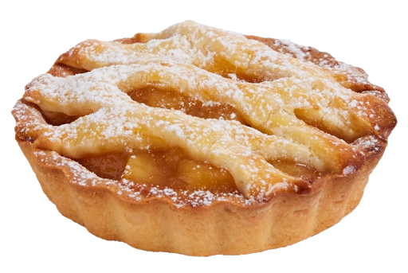
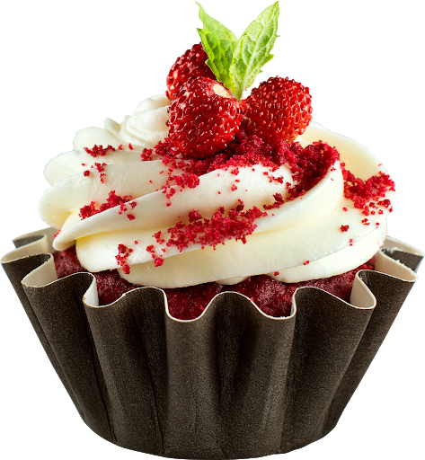
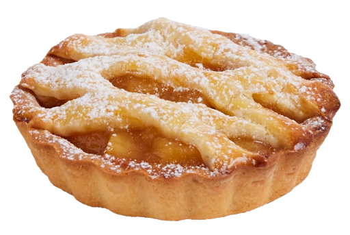
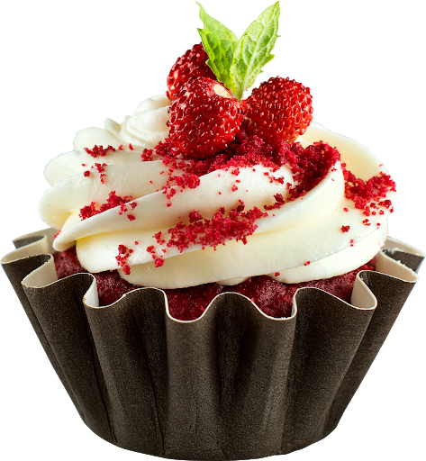

Dessert is a course that concludes a meal. The course usually
consists of sweet foods, such as confections, and possibly a
beverage such as dessert wine or liqueur. In some parts of the
world, such as much of central and western Africa, and most parts of
China and India, there is no tradition of a dessert course to
conclude a meal.
The term dessert can apply to many confections, such as biscuits,
cakes, cookies, custards, gelatins, ice creams, pastries, pies,
puddings, sweet soups, and tarts. Fruit is also commonly found in
dessert courses because of its naturally occurring sweetness. Some
cultures sweeten foods that are more commonly savory to create
desserts.
Sweets were fed to the gods in ancient Mesopotamia and ancient India and other ancient civilizations. Dried fruit and honey were probably the first sweeteners used in most of the world, but the spread of sugarcane around the world was essential to the development of dessert. Sugarcane was grown and refined in India before 500 BC and was crystallized, making it easy to transport, by AD 500. Sugar and sugarcane were traded, making sugar available to Macedonia by 300 BC and China by AD 600. In the Indian subcontinent, the Middle East, and China, sugar has been a staple of cooking and desserts for over a thousand years. Sugarcane and sugar were little known and rare in Europe until the twelfth century or later when the Crusades and then colonization spread its use. Herodotus mentions that, as opposed to the Greeks, the main Persian meal was simple, but they would eat many desserts afterwards. Europeans began to manufacture sugar in the Middle Ages, and more sweet desserts became available. Even then sugar was so expensive usually only the wealthy could indulge on special occasions. The first apple pie recipe was published in 1381. The earliest documentation of the term cupcake was in "Seventy-five Receipts for Pastry, Cakes, and Sweetmeats" in 1828 in Eliza Leslie's Receipts cookbook. The Industrial Revolution in Europe and later America caused desserts (and food in general) to be mass-produced, processed, preserved, canned, and packaged. Frozen foods, including desserts, became very popular starting in the 1920s when freezing emerged. These processed foods became a large part of diets in many industrialized nations. Many countries have desserts and foods distinctive to their nations or region.
Sweet desserts usually contain cane sugar, palm sugar, brown sugar, honey, or some types of syrup such as molasses, maple syrup, treacle, or corn syrup. Other common ingredients in Western-style desserts are flour or other starches, Cooking fats such as butter or lard, dairy, eggs, salt, acidic ingredients such as lemon juice, and spices and other flavoring agents such as chocolate, peanut butter, fruits, and nuts. The proportions of these ingredients, along with the preparation methods, play a major part in the consistency, texture, and flavor of the end product. Sugars contribute moisture and tenderness to baked goods. Flour or starch components serves as a protein and gives the dessert structure. Fats contribute moisture and can enable the development of flaky layers in pastries and pie crusts. The dairy products in baked goods keep the desserts moist. Many desserts also contain eggs, in order to form custard or to aid in the rising and thickening of a cake-like substance. Egg yolks specifically contribute to the richness of desserts. Egg whites can act as a leavening agent or provide structure. Further innovation in the healthy eating movement has led to more information being available about vegan and gluten-free substitutes for the standard ingredients, as well as replacements for refined sugar. Desserts can contain many spices and extracts to add a variety of flavors. Salt and acids are added to desserts to balance sweet flavors and create a contrast in flavors. Some desserts are coffee-flavored, for example an iced coffee soufflé or coffee biscuits. Alcohol can also be used as an ingredient, to make alcoholic desserts.
Dessert consist of variations of tasted, textures, and appearances. Desserts can be defined as a usually sweeter course that concludes a meal. This definition includes a range of courses ranging from fruits or dried nuts to multi-ingredient cakes and pies. Many cultures have different variations of dessert. In modern times the variations of desserts have usually been passed down or come from geographical regions. This is one cause for the variation of desserts. These are some major categories in which desserts can be placed.